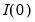
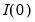

A common occurrence in time series regression is the presence of correlation between residuals and their lagged values. This serial correlation violates the standard assumption of regression theory which requires uncorrelated regression disturbances. Among the problems associated with unaccounted for serial correlation in a regression framework are:
(Note that ARMA and ARIMA models which allow for explanatory variables in the mean are sometimes termed ARIMAX and
ARIMAX. We will generally use
ARMA to refer to models both with and without explanatory variables unless there is a specific reason to distinguish between the two types.)
Stationary processes are said to have long memory when autocorrelations are persistent, decaying more slowly than the rate associated with ARMA models. Modeling long term dependence is difficult for standard ARMA specifications as it requires non-parsimonious, large-order ARMA representations that are generally accompanied by undesirable short-run dynamics (Sowell, 1992).
One popular approach to modeling long memory processes is to employ the notion of fractional integration (Granger and Joyeux, 1980; Hosking, 1981). A fractionally integrated series is one with long-memory that is not

.
Notice that the ARFIMA specification is identical to the standard Box-Jenkins ARIMA formulation in Equation (24.32), but allowing for non-integer

. Note also that the range restriction on

is non-binding as we may apply integer differencing or summing until

is in the desired range.
This phase of the ARIMA modeling procedure is called identification (not to be confused with the same term used in the simultaneous equations literature). The nature of the correlation between current values of residuals and their past values provides guidance in selecting an ARIMA specification.


 , denoted AR(
, denoted AR( ) has the form
) has the form are the independent and identically distributed innovations for the process and the autoregressive parameters
are the independent and identically distributed innovations for the process and the autoregressive parameters  characterize the na ture of the dependence. Note that the autocorrelations of a stationary AR(
characterize the na ture of the dependence. Note that the autocorrelations of a stationary AR( ) are infinite, but decline geometrically so they die off quickly, and the partial autocorrelations for lags greater than
) are infinite, but decline geometrically so they die off quickly, and the partial autocorrelations for lags greater than  are zero.
are zero.  such that:
such that: ) as
) as and parameters
and parameters  , the AR(1) model may be written as:
, the AR(1) model may be written as: is the first-order serial correlation coefficient.
is the first-order serial correlation coefficient.  , AR(
, AR( ), is given by:
), is given by: , denoted MA(
, denoted MA( ) has the form
) has the form are the innovations, and
are the innovations, and that characterize the MA process. Note that the autocorrelations of an MA model are zero for lags greater than
that characterize the MA process. Note that the autocorrelations of an MA model are zero for lags greater than  .
. coefficients.
coefficients. is a weighted sum of the current and lagged innovations
is a weighted sum of the current and lagged innovations  and :
and : is the first-order moving average coefficient. Substituting, the MA(1) may be written as
is the first-order moving average coefficient. Substituting, the MA(1) may be written as ) to indicate that there are
) to indicate that there are  lags in the AR and
lags in the AR and  terms in the MA.
terms in the MA. is the first-order serial correlation coefficient, and the
is the first-order serial correlation coefficient, and the  is the moving average coefficient. Substituting, the ARMA(1, 1) may be written as
is the moving average coefficient. Substituting, the ARMA(1, 1) may be written as ) term is a seasonal autoregressive term with lag
) term is a seasonal autoregressive term with lag  . A SAR adds to an existing AR specification a polynomial with a lag of
. A SAR adds to an existing AR specification a polynomial with a lag of  :
: as:
as: ) can be included in your specification to specify a seasonal moving average term with lag
) can be included in your specification to specify a seasonal moving average term with lag  . The resulting the MA lag structure is obtained from the product of the lag polynomial specified by the MA terms and the one specified by any SMA terms.
. The resulting the MA lag structure is obtained from the product of the lag polynomial specified by the MA terms and the one specified by any SMA terms. is said to be integrated of order 0 or
is said to be integrated of order 0 or  , if it may be written as a MA process , with coefficients such that
, if it may be written as a MA process , with coefficients such that process is a moving average with autocovariances that die off sufficiently quickly, a condition which is necessary for stationarity (Hamilton, 2004).
process is a moving average with autocovariances that die off sufficiently quickly, a condition which is necessary for stationarity (Hamilton, 2004). is said to be integrated of order
is said to be integrated of order  or
or  , if its
, if its  -th integer difference, is , and the difference is not.
-th integer difference, is , and the difference is not.  is an integer and that
is an integer and that  or so that first or second differencing the original series yields a stationary series. We will consider both integer and non-integer integration in turn.
or so that first or second differencing the original series yields a stationary series. We will consider both integer and non-integer integration in turn. ) model is defined as an
) model is defined as an  process whose
process whose  -th integer difference follows a stationary ARMA(
-th integer difference follows a stationary ARMA( ) process. In polynomial form we have:
) process. In polynomial form we have: assumes that the first difference of
assumes that the first difference of  is an ARMA(1,1).
is an ARMA(1,1). we may write this specification as
we may write this specification as :
: -difference operator applied to a process produces a random walk we say that the process is an ARFIMA(0,
-difference operator applied to a process produces a random walk we say that the process is an ARFIMA(0,  , 0). Hosking notes that for an ARFIMA(0,
, 0). Hosking notes that for an ARFIMA(0,  , 0):
, 0): -th order fractional differencing results in an ARMA(
-th order fractional differencing results in an ARMA( ), the process is said to be ARFIMA(
), the process is said to be ARFIMA( ). In polynomial form we have:
). In polynomial form we have: , the autocorrelations and partial autocorrelations of the ARFIMA process decay more slowly (hyperbolically) than the rates associated with ARMA specifications. Thus, the ARFIMA model allows you to model slowing decaying long-run dependence using the
, the autocorrelations and partial autocorrelations of the ARFIMA process decay more slowly (hyperbolically) than the rates associated with ARMA specifications. Thus, the ARFIMA model allows you to model slowing decaying long-run dependence using the  parameter and more rapidly decaying short-run dynamics using a parsimonious ARMA(
parameter and more rapidly decaying short-run dynamics using a parsimonious ARMA( ).
).  when are already in the prediction model. In fact, the partial autocorrelation is precisely the regression coefficient of in a regression where the earlier lags are also used as predictors of
when are already in the prediction model. In fact, the partial autocorrelation is precisely the regression coefficient of in a regression where the earlier lags are also used as predictors of  .
.